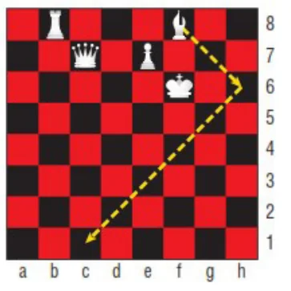
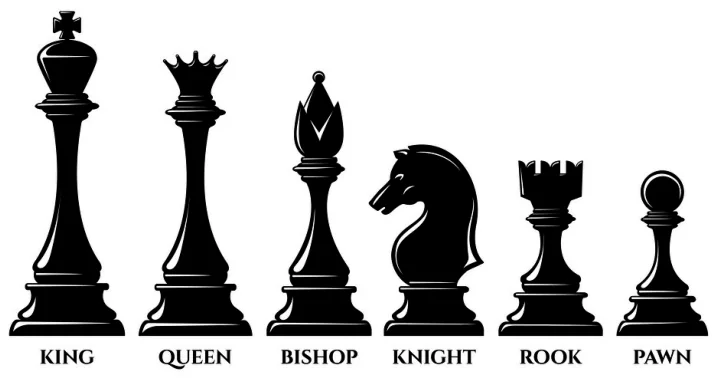
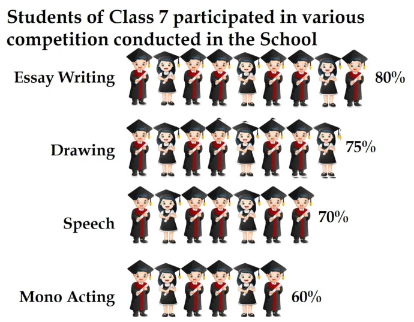
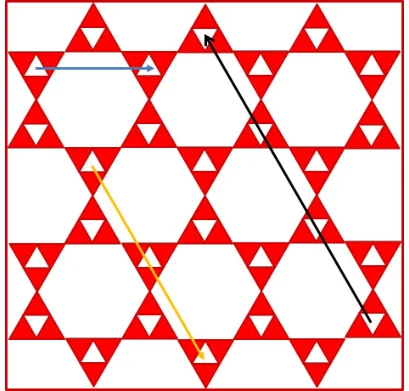
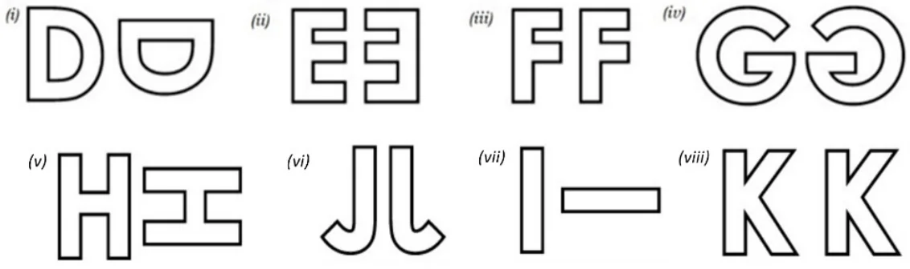
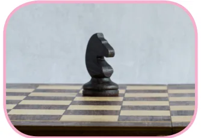
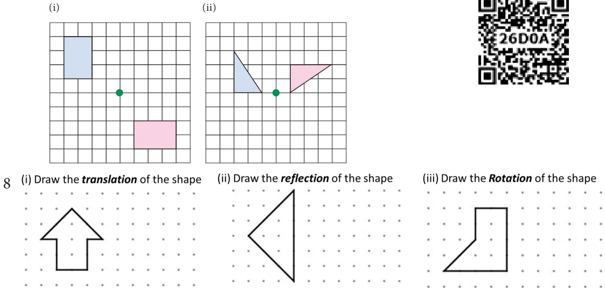

Miscellaneous Practice problems

- The bishop, in given picture of chess board, can move diagonally along dark squares. Describe the translations of the bishop after two moves as shown in the figure.
- Write a possible translation for each of chess piece for a single move.


- Referring the graphic given, answer the following questions. Each bar of the category is made up of boy-girl-boy unit. (i) Which categories show a boy-girl-boy unit that is translation within the bar? (ii) Which categories show a boy-girl-boy unit that is reflected within the bar?

- Given figure is a floor design in which the length of the small red equilateral triangle is \(30\ \text{cm}\). All the triangles and hexagons are regular. Describe the translations in cm, represented by the (i) yellow line (ii) black line (iii) blue line.
- Describe the transformation involved in the following pair of figures (letters). Write translation, reflection or rotation.

Challenge Problems

- In chess, a knight can move only in an L-shaped pattern:
- two vertical squares, then one horizontal square;
- two horizontal squares, then one vertical square;
- one vertical square, then two horizontal squares; or
- one horizontal square, then two vertical squares.
- The pink shape is congruent to blue shape. Describe a sequence of transformations in which the blue shape is the image of pink shape.

- Draw concentric circles given that radius of inner circle is \(4.5\ \text{cm}\) and width of circular ring is \(2.5\ \text{cm}\).
- Draw concentric circles given that radius of outer circle is \(5.3\ \text{cm}\) and width of circular ring is \(1.8\ \text{cm}\).